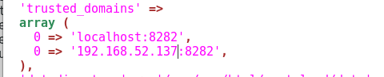

Observaciones
Todo el servidor fue configurado con PHP 7.1, por lo tanto cualquier paquete que requiera PHP deberá ser compatible con la versión 7.1
Datos de acceso al servidor
IP Pública: 201.99.68.59
IP Local: 192.168.52.3
Acceso de NextCloud
Puerto interno:8282
Acceso de Document Server OnlyOffice
Puerto interno:80
Acceso Mantis BT
Acceso intranet
Acceso externo
Root
Usuario: root
Password: 4x9RSNIEnNs3MFqt1KjW
Usuario: coreprocesses
Password: Corepro1
Instancia MySQL
usuario: root
contraseña: CoreproTab1
Base de datos NextCloud
Nombre: nextcloud
Usuario: nc_user
Contraseña: CoreproNext1
NextCloud
Usuario administrador: admin
Contraseña: CoreproMxTab_1
Base de datos Mantis BT
Nombre: mantisdb
Usuario: mantisuser
Contraseña: CoreproMantisBt1
Mantis BT
Usuario: adminbt
Contraseña: CoreproMantisBt1
Instalación y actualización del servidor
Instalar Centos con Particionado Automático y la opción Servidor con GUI
Para actualizar el sistema operativo favor de seguir la guía:
Instalación de XRDP (el escritorio remoto)
Favor de seguir esta guía:
Instalación de Document Server (OnlyOffice, herramienta para edición de documentos en línea)
Instalando Dependencias:
curl -sL https://rpm.nodesource.com/setup_6.x | sudo bash -
Instalar NodeJS
sudo yum install -y nodejs
Instalar gcc-c++
sudo yum install gcc-c++ make
Crear el archivo:
sudo gedit /etc/yum.repos.d/nginx.repo
Con los siguientes datos:
[nginx]
name=nginx repo
baseurl=http://nginx.org/packages/centos/7/$basearch/
gpgcheck=0
enabled=1
Install NGINX:
sudo yum install nginx
Editar el archivo:
sudo gedit /etc/nginx/nginx.conf
Debe quedar con la siguiente estructura:
user nginx;
worker_processes 1;
error_log /var/log/nginx/error.log warn;
pid /var/run/nginx.pid;
events {
worker_connections 1024;
}
http {
include /etc/nginx/mime.types;
default_type application/octet-stream;
log_format main '$remote_addr - $remote_user [$time_local] "$request" '
'$status $body_bytes_sent "$http_referer" '
'"$http_user_agent" "$http_x_forwarded_for"';
access_log /var/log/nginx/access.log main;
sendfile on;
#tcp_nopush on;
keepalive_timeout 65;
#gzip on;
include /etc/nginx/conf.d/*.conf;
}
Installing EPEL repository
sudo yum install epel-release
Installing and configuring PostgreSQL
sudo yum install postgresql postgresql-server
Initialize the PostgreSQL database
sudo service postgresql initdb
sudo chkconfig postgresql on
Turn on the 'trust' authentication method
Abrir el archivo:
sudo gedit /var/lib/pgsql/data/pg_hba.conf
Adecuar las siguientes líneas
Find the host all all 127.0.0.1/32 ident string and replace it with the following one:
host all all 127.0.0.1/32 trust
Then find the host all all ::1/128 ident string and replace it with the following one:
host all all ::1/128 trust
Restart the PostgreSQL service:
sudo service postgresql restart
Create the PostgreSQL database and user:
cd /tmp
sudo -u postgres psql -c "CREATE DATABASE onlyoffice;"
sudo -u postgres psql -c "CREATE USER onlyoffice WITH password 'onlyofficeCorepro1';"
sudo -u postgres psql -c "GRANT ALL privileges ON DATABASE onlyoffice TO onlyoffice;"
Installing Redis
sudo yum install redis
sudo service redis start
sudo systemctl enable redis
Installing RabbitMQ
sudo yum install rabbitmq-server
sudo service rabbitmq-server start
sudo systemctl enable rabbitmq-server
Installing Document Server
sudo yum install http://download.onlyoffice.com/repo/centos/main/noarch/onlyoffice-repo.noarch.rpm
sudo yum install onlyoffice-documentserver
Run dependent services and enable start of them on boot:
sudo service supervisord start
sudo systemctl enable supervisord
sudo service nginx start
sudo systemctl enable nginx
Hasta este punto Document Server se debería ver en localhots (una página que dice que Document Server está en funcionamiento)
Run a configuration script
bash documentserver-configure.sh
Datos del archivo de configuración de Document Server
For PostgreSQL:
Host: localhost
Database: onlyoffice
User: onlyoffice
Password: onlyofficeCorepro1
For Redis:
Host: localhost
For RabbitMQ:
Host: localhost
User: guest
Password: guest
Add a firewall exception
sudo firewall-cmd --zone=public --add-port=80/tcp --permanent
sudo firewall-cmd --reload
Por último verificar que funcion el servidor en el navegador Localhost
Instalación de NextCloud
Instalación de PHP versión 7.1
yum install epel-release
yum install httpd php71w php71w-dom php71w-mbstring php71w-gd php71w-pdo php71w-json php71w-xml php71w-zip php71w-curl php71w-mcrypt php71w-pear setroubleshoot-server bzip2
Instalación de MySQL/MariaDB
yum install mariadb-server php71w-mysql
Start (and enable at boot) the service:
systemctl start mariadb
systemctl enable mariadb
Next step is to configure the database management system. During the configuration you will be prompted to choose a root password, pick a strong one.
mysql_secure_installation
Now you need to enter the database (you will be asked the password you just set):
mysql -u root -p
Now that you are in create a database:
CREATE DATABASE nextcloud;
Now you need to create the user that will be used to connect to the database:
CREATE USER 'nc_user'@'localhost' IDENTIFIED BY 'CoreproNext1';
The last step is to grant the privileges to the new user:
GRANT ALL PRIVILEGES ON nextcloud.* TO 'nc_user'@'localhost';
FLUSH PRIVILEGES;
Instalar NextCloud
cd /var/www/html
curl -o nextcloud-13-latest.tar.bz2 https://download.nextcloud.com/server/releases/latest-13.tar.bz2
tar -xvjf nextcloud-13-latest.tar.bz2
mkdir nextcloud/data
chown -R apache:apache nextcloud
rm nextcloud-13-latest.tar.bz2
Crear el archivo:
sudo gedit /etc/httpd/conf.d/nextcloud.conf
Con los siguientes datos:
Alias /nextcloud "/var/www/html/nextcloud/"
<Directory /var/www/html/nextcloud/>
Options +FollowSymlinks
AllowOverride All
<IfModule mod_dav.c>
Dav off
</IfModule>
SetEnv HOME /var/www/html/nextcloud
SetEnv HTTP_HOME /var/www/html/nextcloud
</Directory>
Setting Apache and SELinux
semanage fcontext -a -t httpd_sys_rw_content_t '/var/www/html/nextcloud/data(/.*)?'
semanage fcontext -a -t httpd_sys_rw_content_t '/var/www/html/nextcloud/config(/.*)?'
semanage fcontext -a -t httpd_sys_rw_content_t '/var/www/html/nextcloud/apps(/.*)?'
semanage fcontext -a -t httpd_sys_rw_content_t '/var/www/html/nextcloud/.htaccess'
semanage fcontext -a -t httpd_sys_rw_content_t '/var/www/html/nextcloud/.user.ini'
restorecon -Rv '/var/www/html/nextcloud/'
setsebool -P httpd_can_network_connect_db 1
Cambiar el puerto 80 de Apache
sudo gedit /etc/httpd/conf/httpd.conf
Cambiar la línea:
Listen 80 por
Listen 8282
Agregar la Excepción SELinux (De lo contrario el servicio Apache no se inicia)
semanage permissive -a httpd_t
systemctl start httpd
systemctl enable httpd
FirewallD
firewall-cmd --add-service http --permanent
firewall-cmd --add-service https --permanent
sudo firewall-cmd --zone=public --add-port=8282/tcp --permanent
firewall-cmd --reload
Por último terminar la instalación de NextCloud pasando los parametros solicitados por el asistente de instalación
Si por alguna razón marca el siguiente error:
Some files have not passed the integrity check… CentOS 7/Nextcloud
Solucionar con los siguientes comando
semanage fcontext -a -t httpd_sys_rw_content_t '/var/www/html/nextcloud/3rdparty/aws/aws-sdk-php/src/data/logs'
restorecon -Rv '/var/www/html/nextcloud/3rdparty/aws/aws-sdk-php/src/data/logs'
systemctl restart httpd.service
Configuraciones de optimización (mandatorio seguirlas, excepto la que implica una conexión mediante HTTPS, aún no tenemos certificado valido)
Este paso está descrito en la URL anterior pero para una versión vieja de PHP, para la configuración de la caché realizar los siguientes pasos:
Instalar APCu
yum install php71w-pecl-apcu
Agregar la siguiente linea de configuración en el archivo:
sudo gedit /var/www/html/nextcloud/config/config.php
'memcache.local' => '\OC\Memcache\APCu',
Reiniciar el servidor
sudo systemctl restart httpd
El OPcache de PHP no está configurado correctamente.
Primero es necesario realizar la instalación de OPCache para PHP 7.1
yum install php71w-pecl-zendopcache
Para un mejor desempeño se recomienda usar las sigueintes configuraciones en el archivo:
sudo gedit /etc/php.d/opcache.ini
Basicamente asegurarse de estas configuraciones esten en el archivo
opcache.enable=1
opcache.enable_cli=1
opcache.interned_strings_buffer=8
opcache.max_accelerated_files=10000
opcache.memory_consumption=128
opcache.save_comments=1
opcache.revalidate_freq=1
Reiniciar el servidor
sudo systemctl restart httpd
Configuración de conexión con LDAP
Instalación de paquetes adicionales de PHP para LDAP
yum install php71w-ldap php71w-intl
Verifica si la autenticación LDAP está habilitada
getsebool -a|grep ldap
Habilitar la autenticación LDAP
setsebool httpd_can_connect_ldap 1
systemctl restart httpd
CONFIGURACIÓN DE CONEXIÓN A LA AUTENTICACIÓN LDAP DE MANERA PERMANENTE
Verifica si la autenticación LDAP está habilitada
getsebool -a|grep ldap
Habilitar la autenticación LDAP por medio del comando setsebool.
El comando setsebool activa o desactiva Booleanos, la opción -P es para hacer los cambios persistentes (sin este parámetro, al reiniciar se perderá el cambio) y x es on o 1 para activar, u off o 0 para desactivar.
Para nuetro caso el comando queda con la siguiente sintaxis:
setsebool -P httpd_can_connect_ldap 1
Reiniciar el servicio
systemctl restart httpd
Posteriormente habilitar el acceso LDAP desde la configuración de aplicaciones de NextCloud
Instalación de Aplicaciones
Habilitar la aplicación LDAP para realizar la configuración con LDAP
Habilitar LDAP user and group backend
Datos de configuración de acceso al LDAP
Importante: asegurase que el servidor LDAP tenga abierto el puerto 389 para que el servicio LDAP sea accedido desde fuera del equipo
Servidor
Servidor: 192.168.52.4 Puerto: 389
DN del usuario: cn=admin ,dc=coreprocesses,dc=com
Contraseña: [contraseña del administrador del ldap]
DN Base: ou=Group,dc=coreprocesses,dc=com
Usuarios
Seleccionar de la lista: Solo esta clase de objetos: person
Todo lo demás por defecto
Atributos de inicio de sesión
Marcar la casilla Usuario LDAP /AD
Todo lo demás por defecto
Grupos
Seleccionar de la casilla Solo esta clases de objetos: organizationalUnit
Instalación de Plugin OnlyOffice
Instalar OnlyOffice
Conigurar el servidor en:
La ip del servidor es la IP donde se haya instalador el servidor (Importante colocar la IP o dominio público)
Verificar la funcionalidad creando un documento
Configurar la IP pública en el archivo de configuración:
sudo gedit /var/www/html/nextcloud/config/config.php

Instalación de PDFViewer
Instalar el PDF Viewer desde:
Basicamente solo se trata de habilitar el visor de PDF
Instalación de Markdown Editor
GRANT ALL PRIVILEGES ON mantisdb.* TO 'mantisuser'@'localhost' IDENTIFIED BY 'CoreproMantisBt1' WITH GRANT OPTION;
Por defecto la autenticación de Mantis solo permite LDAP o por formulario, por lo tanto hay que realizar la
El archivo: core/authentication_api.php for the function auth_does_password_match().
if ( LDAP == $t_configured_login_method ) { return ldap_authenticate( $p_user_id, $p_test_password ); }
Listo.
Verificar que se puede autenticar de ambas formas.
UPDATE mantis_user_table SET PASSWORD=MD5('CoreproMantisBt1'), enabled=1, protected=0, access_level=90 WHERE username='adminbt';
$g_phpMailer_method = PHPMAILER_METHOD_SMTP; # or PHPMAILER_METHOD_SMTP, PHPMAILER_METHOD_SENDMAIL
$g_smtp_password = 'Corepro1'; # used with PHPMAILER_METHOD_SMTP